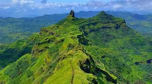
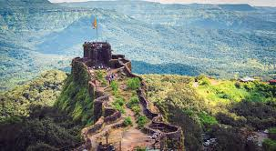
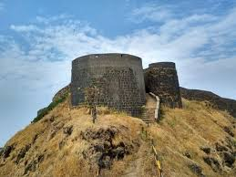
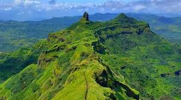
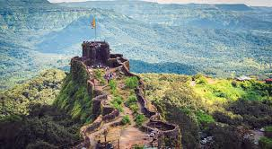
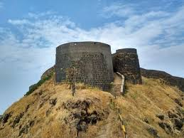

  
  
Torna Fort, also known as Prachandagad, is a large fort located in Pune district, in the Indian state of Maharashtra.
Information:- “Whenever Maratha history is recalled it is always the fort of Torna that is commemorated for being one of those forts captured by Shivaji Maharaj in his teenage. It has been rightly said by James Douglas “”It was Shivaji’s first conquest, the nucleus around which all the others clustered, making it virtually the cradle of the Marathi Empire, which shocked the throne of the great Moguls. It has been the scene of many bloody battles. If Sinhagad is Lion’s does then Torna is Eagle’s nest.””
On the fort are found many trees of the type “Toran”, which may be the reason for the name of the fort. The fort is located in Pune district, 18.36 degrees Latitude & 73.37 degrees Longitude. The village at the base of the fort is called “Velhe”. To the south of Torna is the river of Velvandi & to the north is the Valley of Kanad River.